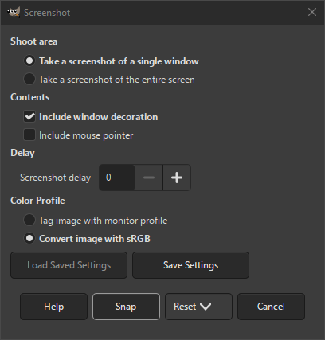

The commands in this submenu vary somewhat, depending upon your system, since GIMP makes calls to system functions.
When you copy a selection, it goes into the clipboard. Use → → or press Shift+Ctrl+V to create a new image from the content in the clipboard.
Este comando tem a mesma ação que o comando Colar como nova.
A tecla Print Screen do teclado captura a tela e coloca-a na área de transferência. Este comando tem a mesma ação que “Capturar a tela inteira” na janela de diálogo de Captura de tela. A combinação de teclado Alt+Print Screen captura a visualização da janela ativa na tela com as suas decorações e coloca-a na área de transferência.
Figura 16.4. The “Screenshot” dialog

The Windows version of the Screenshot Dialog, without the Selection delay setting.
![[Nota]](images/note.png)
|
Nota |
|---|---|
|
The Screenshot dialog may look different depending on your operating system. For example, on a Linux system which implements the XDG portal specification, the screenshot dialog provided by your operating system may get opened instead of GIMP's built-in dialog described in this section. |
The command opens a dialog with the following options:
- Shoot area
-
- Capturar uma única janela
-
The mouse pointer becomes a cross. Click in the image window you want to capture. A new image is created.
- Capturar a tela inteira
-
Isso é útil, por exemplo, se você quiser capturar um menu flutuante. O atraso é necessário para que você tenha tempo de clicar nos menus e navegar até o ponto desejado.
- Selecionar uma região da tela
-
O ponteiro do mouse se torna uma cruz. Clique e arraste para criar uma seleção retangular na janela que contém a imagem desejada. Esta seleção será aberta como uma nova imagem. O seu tamanho é igual ao da seleção feita.
- Contents
-
- Include window decoration
-
If the Include window decoration option is unchecked, the title bar and the frame around the image will be removed.
- Include mouse pointer
-
Se a opção Incluir ponteiro do mouseestiver marcada, então o ponteiro do mouse também é capturado. O ponteiro do mouse é capturado em uma camada separada. Assim, você pode movê-lo para outro lugar na imagem se desejar.
- Atraso
-
- Selection delay (not available on Windows)
-
The seconds to let pass until you select the shoot area.
- Screenshot delay
-
Ao fazer uma captura de tela da tela inteira, a captura acontece após esse atraso. Nos outros casos, o ponteiro do mouse se transforma em uma cruz após esse atraso.
- Color Profile
-
Select whether to Tag image with monitor profile or to Convert image with sRGB to GIMP's built-in sRGB color space. See Seção 6.8, ““Color Management” Submenu” for more information.
Nota Due to a software bug, GIMP may assign an incorrect color profile to screenshots.
Este item está disponível no Windows e usa TWAIN. Os dispositivos de entrada de imagem aparecem na janela quando estão conectados. No Linux, é necessário instalar o plug-in de terceiros XSane, que ficará disponível no menu → → → .
Os tipos de dispositivos usados para tirar fotos são muito variados para serem descritos aqui. Felizmente, o seu uso é bastante intuitivo. No exemplo mostrado, você pode começar a digitalizar uma imagem com um scanner ou tirar uma foto com uma webcam.